Expedições fotográficas
Viagens de dois a cinco dias pelas províncias, com cobertura completa da paisagem e entrega de ficheiros tratados.
Fotógrafo de paisagem · Maputo, Moçambique
Persigo a luz que dura três minutos. Maré, sal, granito e céu — o país inteiro cabe num quadro quando o sol se despede.
01 — Trabalho seleccionado
Doze imagens, doze saídas de casa. Filtre por tema ou abra qualquer fotografia em ecrã inteiro — todas disponíveis para descarregar em alta resolução.
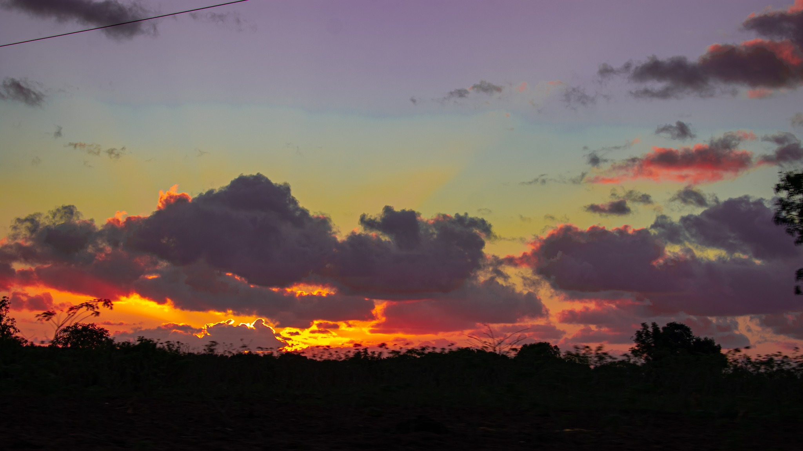
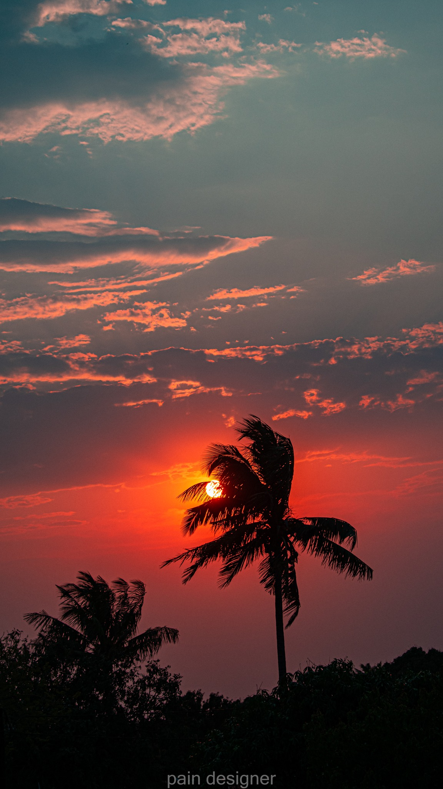
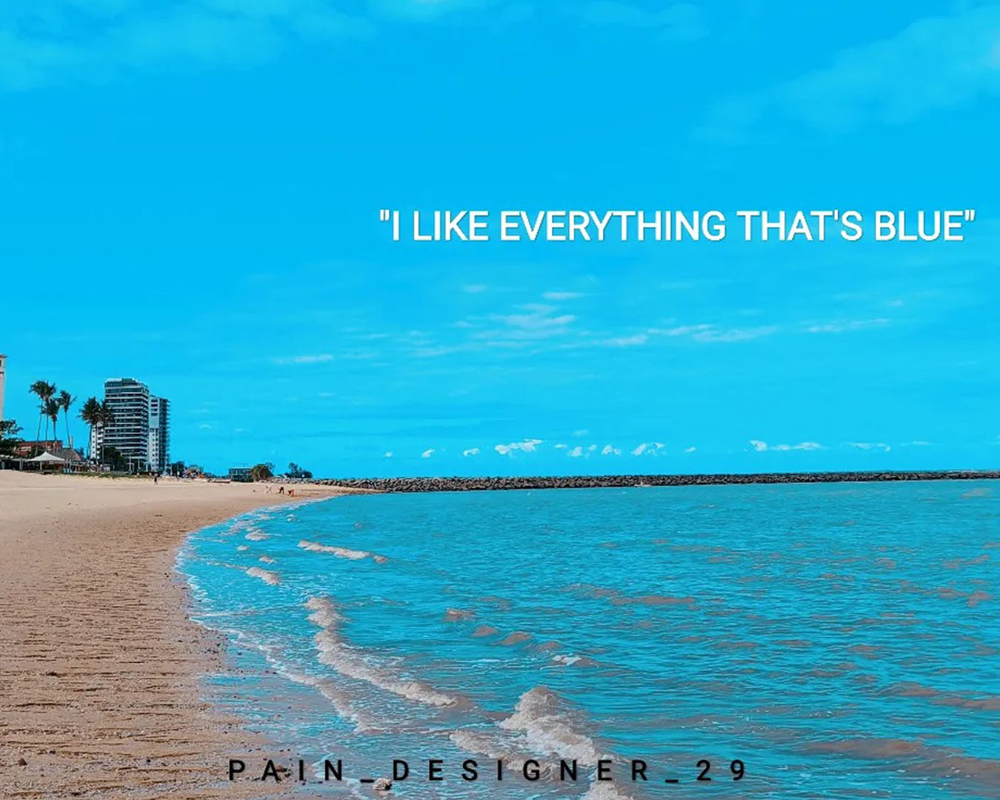
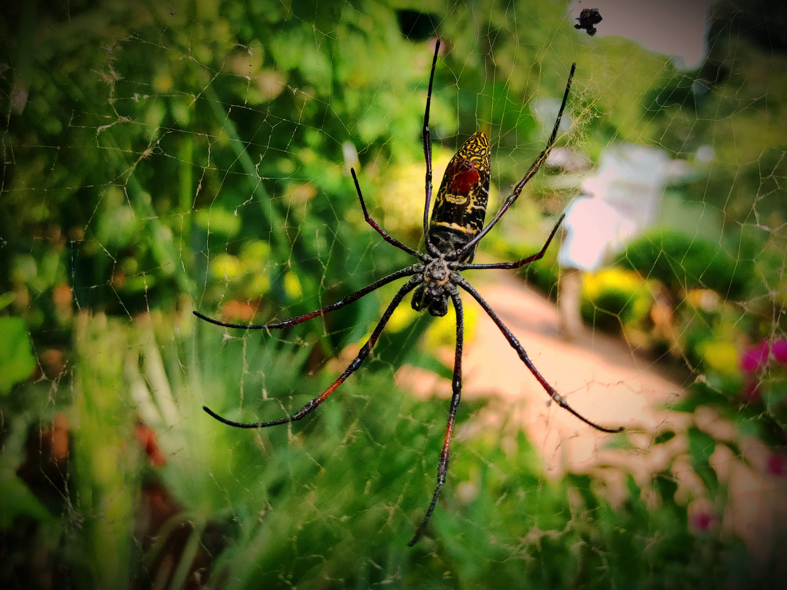
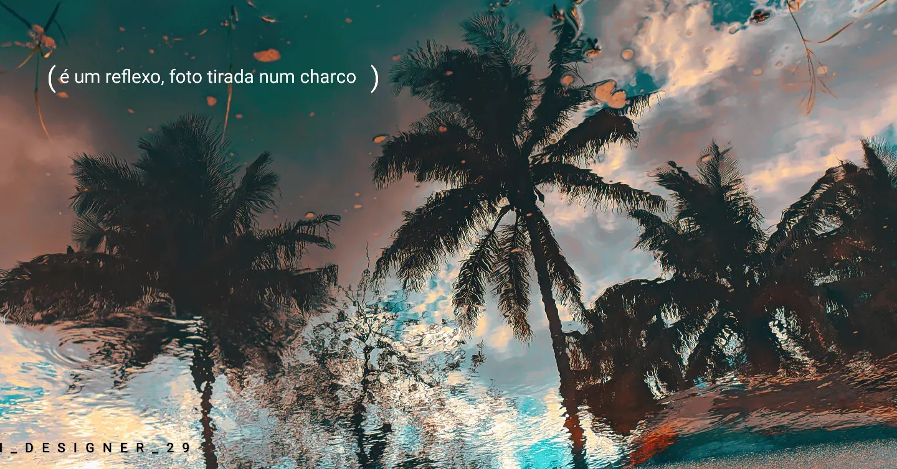
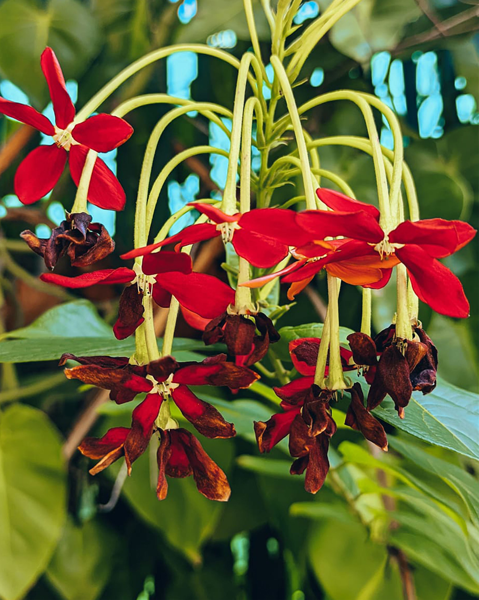
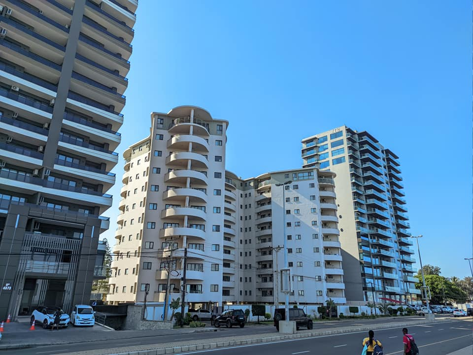
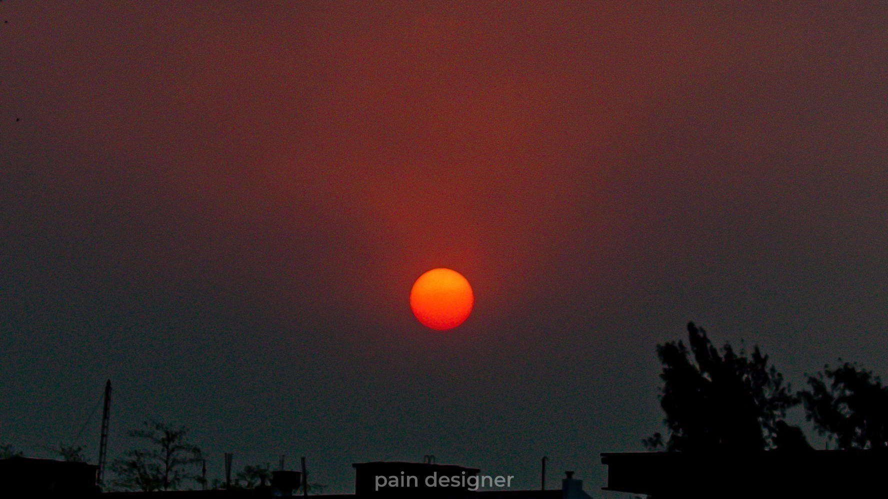
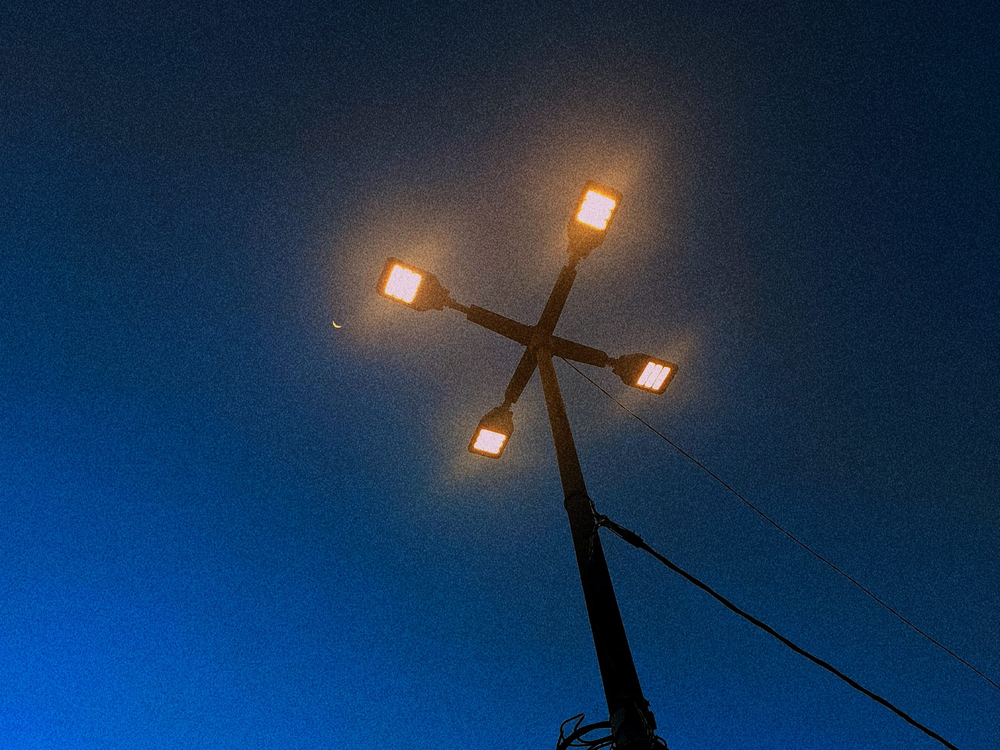
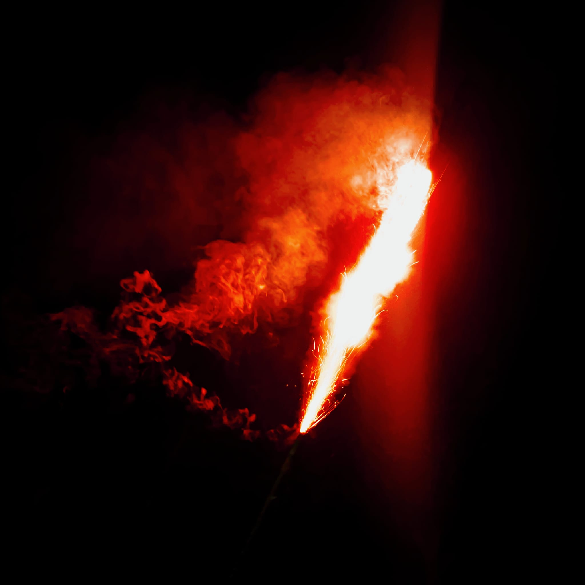
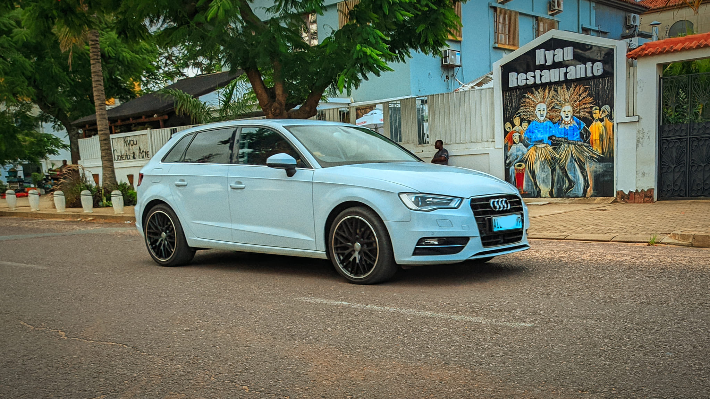
Nenhuma fotografia neste tema — para já.
“A paisagem não posa. Ou estás lá quando a luz cai, ou ficas com a história.”
02 — Quem está atrás da lente
Comecei com uma câmara emprestada e uma estrada de terra batida a caminho de Bilene. Sete anos depois continuo a fazer o mesmo: acordar antes do sol e esperar. Fotografo Moçambique de norte a sul — dunas, mangais, betão e a linha exacta onde o Índico encontra o céu.
Todo o trabalho aqui foi captado em digital, revelado com mão leve e publicado em alta resolução no MozScape para quem quiser levar um pedaço do país para casa.
03 — Como posso ajudar
Viagens de dois a cinco dias pelas províncias, com cobertura completa da paisagem e entrega de ficheiros tratados.
Registo de espaços, lodges e edifícios com correcção de perspectiva e luz natural trabalhada ao detalhe.
Tiragens limitadas em papel de algodão, numeradas e assinadas, com perfil de cor calibrado.
Tratamento dos seus ficheiros RAW mantendo a cor fiel ao momento, sem exageros de saturação.
04 — Percurso
De uma câmara emprestada a um arquivo de onze províncias. O caminho até aqui, em quatro paragens.
Câmara emprestada, viagem a Bilene e o primeiro nascer do sol fotografado a sério. Nunca mais devolvi o hábito.
Projecto pessoal de atravessar o país por terra. Onze províncias, quatro mil quilómetros e o arquivo que sustenta esta galeria.
“Maré Alta” — vinte impressões grandes em Maputo, com metade da sala a perguntar onde ficava o Monte Binga.
Todo o arquivo passa a viver online, em alta resolução e livre para descarregar. A paisagem é de quem a olha.
05 — Dizem por aí
Pediu-nos três dias e devolveu uma campanha inteira. As imagens do lodge duplicaram as reservas de época baixa.
Trabalha com uma paciência rara. Esperou quatro horas pela maré certa e tinha razão — a fotografia é outra coisa.
As impressões chegaram impecáveis e a cor é exactamente a que vimos no ecrã. Já encomendámos a segunda série.
06 — Próximo passo
Conte-me para onde quer ir e que luz procura. Respondo em 24 horas, com disponibilidade e orçamento.